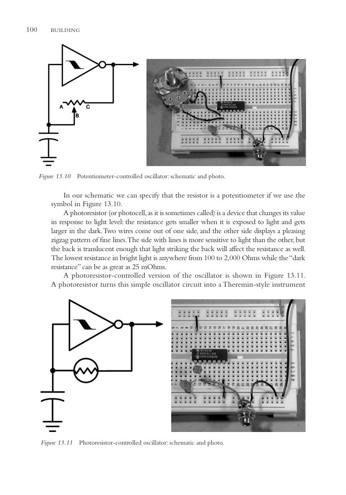

Analog oscillator recipes
Three breadboard circuits, in the order to build them: a square wave, then a square plus a triangle, then a converter that turns that triangle into a sine. Each one is a figure from a book, shown here with its parts, the chips you need and how to get it working.
Before you start
- A solderless breadboard, solid hook-up wire, and an assortment of resistors, capacitors and potentiometers.
- Power. Recipe 1 runs on one 9 V battery. Recipes 2 and 3 need a split supply (+V, ground, −V). The easy way is two 9 V batteries in series: the joint between them is ground, the free + end is +9 V and the free − end is −9 V.
- Something to listen with: a small guitar amp or powered speaker. These circuits put out a hot signal, so start with the volume low.
- An oscilloscope helps a lot from recipe 2 on, because you will want to see the waves as you adjust them. A cheap USB scope or a sound-card scope app is enough at audio frequencies.
1. Square wave one chip
A single Schmitt-trigger inverter with a resistor from its output back to its input and a capacitor to ground. This is the fastest way to hear a sound from a circuit you built.

Parts
| Part | Value | Notes |
|---|---|---|
| IC | CD40106 (or 74C14, CD4584) | Hex Schmitt-trigger inverter. Not 74HC14 or 74AC14, which won't run on 9 V. |
| Capacitor | 0.1 µF (marked "104") | Sets the pitch range. Bigger = lower. |
| Resistor or pot | 100 kΩ fixed, or a 1 MΩ pot | Add about 10 kΩ in series with the pot so it can't reach 0 Ω and go ultrasonic. |
| Output | ¼" or ⅛" jack | Tip to the output pin, sleeve to ground. |
| Power | 9 V battery + clip |
Build it
- Put the chip across the breadboard's centre groove, notch to the left. Wire pin 14 to +9 V and pin 7 to ground.
- Connect the 0.1 µF capacitor from pin 1 to ground.
- Connect the resistor (or pot + 10 kΩ) between pin 1 and pin 2.
- Take the output from pin 2 to the tip of the jack. Connect the sleeve to ground.
- Connect the battery and turn the amp up slowly. You should hear a steady buzz: a square wave.
How it works
The inverter's output is always the opposite of its input. While the output is high, the capacitor charges through the resistor. When it reaches the chip's upper threshold the output flips low, and the capacitor discharges until it hits the lower threshold, which flips the output high again. The Schmitt trigger's two thresholds (its hysteresis) keep it switching cleanly instead of stalling in the middle. Pitch depends on R × C: roughly 100–150 Hz with 100 kΩ and 0.1 µF.
Try next
- Swap the resistor for a photoresistor (Figure 13.11) and play it with a flashlight.
- Try capacitors above 2.2 µF for a slow tick-tock you can use as a clock or LFO.
- The chip has six inverters: build a second oscillator and mix the two through resistors.
2. Square + triangle two op amps
This is the "triangle core" that most synth oscillators are built on. One op amp is an integrator, which ramps up and down to make the triangle. The other is a comparator, which flips at the top and bottom of each ramp and makes the square. Each one drives the other.

Parts
| Part | Value | Role |
|---|---|---|
| U1, U2 | TL072 (one chip holds both) | U1 = integrator, U2 = comparator |
| Capacitor | 0.1 µF | Integrator feedback (U1 output → U1 −) |
| R1 | 20 kΩ | Triangle → U2 + input |
| R2 | 100 kΩ | Positive feedback on U2 (sets hysteresis) |
| R3 + R4 | 4.7 kΩ + 1 MΩ pot | Square → U1 − input. R4 is the pitch knob. |
| Power | ±12 V in the book (±9 V also works) | TL072 pin 8 = +V, pin 4 = −V |
Build it
- Place the TL072 and wire pin 8 to +V and pin 4 to −V. Op amp A (pins 1, 2, 3) is U1 and op amp B (pins 5, 6, 7) is U2.
- U1, the integrator: pin 3 (+) to ground. Put the 0.1 µF capacitor between pin 2 (−) and pin 1 (out).
- U2, the comparator: pin 6 (−) to ground. R1 (20 kΩ) from U1's output (pin 1) to pin 5 (+). R2 (100 kΩ) from pin 5 to U2's output (pin 7).
- Close the loop: from U2's output (pin 7), through the 1 MΩ pot (R4) and 4.7 kΩ (R3), into U1's pin 2.
- Power up. The triangle is at pin 1 and the square is at pin 7. Turning R4 changes the pitch of both.
How it works
When U2's output is saturated high, current flows through R3 + R4 into U1's inverting input, and U1's output ramps down steadily. That ramp is one side of the triangle. Through R1 it drags U2's + input down until it crosses zero, U2 slams low, the current reverses, and U1 ramps back up. The R1/R2 divider decides where U2 flips, so it sets the triangle's height. The pot sets how fast the ramps run, so it sets the pitch.
f ≈ (R2 / R1) / (4 · (R3 + R4) · C)
With the book's values that's about 12 Hz to 2.7 kHz across the pot. The triangle is about 4.2 V peak to peak on ±12 V. To make it bigger, increase R1 or decrease R2.
3. Triangle → sine one OTA
A sine wave is hard to make directly, so most synths make a triangle and bend its corners round. Here a transconductance amplifier (OTA) is deliberately overdriven. Its tanh-shaped transfer curve flattens the triangle's tips into something very close to a sine.

Parts
| Part | Value | Role |
|---|---|---|
| U1-A | ½ LM13700 | Overdriven OTA + its on-chip Darlington buffer |
| R4 trimmer | 100 kΩ, "Sine Shape" | How hard the triangle drives the OTA |
| R1, R5 | 20 kΩ, 1 kΩ | Attenuator: ±5 V in becomes about ±41 mV at the inputs |
| R2 + R3 | 1 MΩ trimmer + 100 kΩ, "Sine Bias" | Bias current into pin 1: sets gain and curve |
| R7 + R8 | 100 kΩ trimmer + 470 kΩ, "Top/Btm Symmetry" | Nulls offset so both halves match |
| R9, R10 | 470 kΩ, 82 kΩ | Buffer biasing (pins 5 and 7) |
| R6 | 4.7 kΩ to −9 V | Buffer output load (pin 8) |
| Power | ±9 V | Pin 11 = +V, pin 6 = −V |
Build and tune it
- Wire the circuit as drawn. The input is pin 3 (+), pin 4 (−) goes to ground, pin 1 is the bias, pin 5 is the output current, which feeds the buffer at pin 7, and the sine comes out of pin 8.
- Feed in a triangle of about ±5 V (10 V peak to peak), centred on ground.
- With a scope on pin 8, adjust Sine Shape (R4) until the tips round off into a sine.
- Adjust Sine Bias (R2) for amplitude and shape, then Symmetry (R7) until the top and bottom halves match. The trimmers affect each other, so go back and forth a few times.
Joining recipe 2 to recipe 3. Recipe 2's triangle is only about ±2.1 V, but this converter expects about ±5 V, and the two figures use different supplies (±12 V and ±9 V). To run both from one ±9 V supply, try changing recipe 2's R1 from 20 kΩ to about 68 kΩ. That makes the triangle roughly ±5 V. The bigger R1 also lowers the pitch, so change C from 0.1 µF to 0.033 µF to keep a range of about 10 Hz–2.4 kHz. These two values are worked out from the formula above, not taken from the book, and have not been tested. Use the Sine Shape trimmer to take up any difference.
Wilson lists these as drop-in equivalents: onsemi NE5517, JRC NJM13600 / NJM13700, CoolAudio V13700, and TI's LM13600.
Chips you need
| Chip | Used in | Package to buy | Links |
|---|---|---|---|
| CD40106B | Recipe 1 | CD40106BE (DIP-14) | TI · datasheet · Mouser |
| TL072 | Recipe 2 | TL072CP (DIP-8) | TI · datasheet · Mouser |
| LM13700 | Recipe 3 | LM13700N (DIP-16) | TI · datasheet · Mouser |
Always buy the through-hole DIP package, not surface-mount, so the chips fit a breadboard.
References
- Nicolas Collins, Handmade Electronic Music: The Art of Hardware Hacking, 3rd ed., Routledge, 2020. Chapter 13, "My First Oscillator", Figures 13.1–13.14. Publisher page
- Ray Wilson, Make: Analog Synthesizers, Maker Media, 2013. Appendix A, "Simple but Useful Op Amp Oscillators" (Figures A-9 and A-10); Appendix B, "The LM13700" (Figure B-4).
- Ray Wilson, Music From Outer Space: the author's site with complete synth DIY projects built from these blocks.
- Texas Instruments datasheets: CD40106B, TL072, LM13700. The LM13700 datasheet includes more application circuits.
- Further reading on sine shaping: J. Donald Tillman, "An Improved Sine Shaper Circuit", 2020.